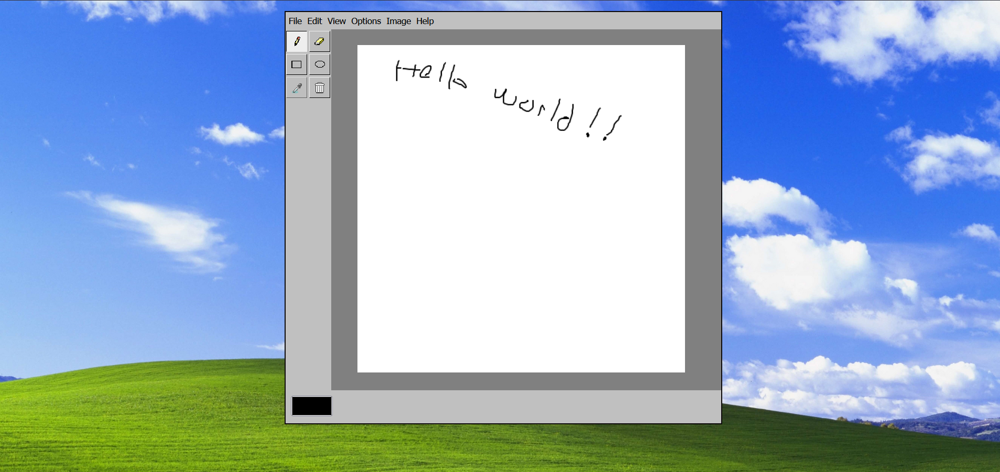
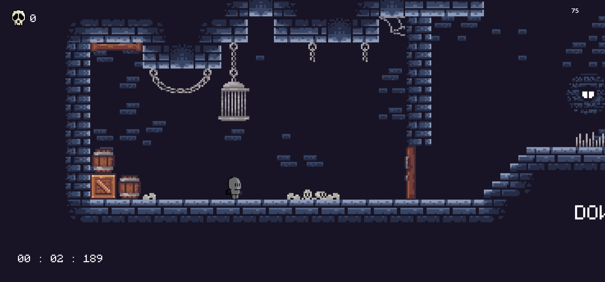
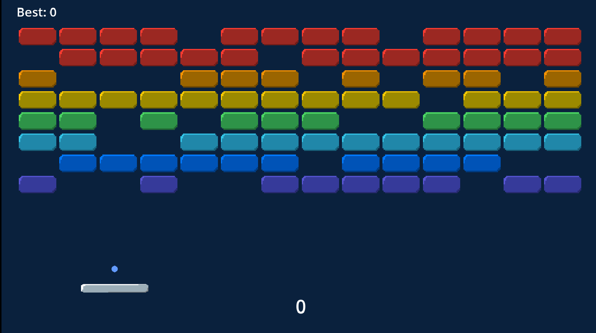
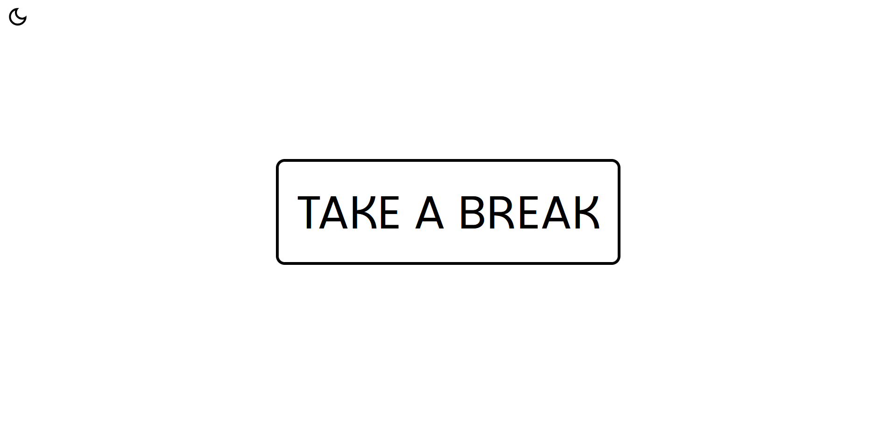

Proyectos pequeños y personales
Otros
En el instituto participé en varias hackatones de programación, con premios que iban desde tecnología hasta viajes pagados a otros países. Estos son algunos de esos proyectos.
Juegos y apps

Old Paint
Clon retro del Paint hecho entero en JavaScript: lienzo, pinceles, colores básicos y la nostalgia de dibujar como en los 90.

Jump Knight
Plataformas 2D con mecánica de pogo sobre pinchos. Dos niveles, rutas alternativas y un atajo secreto.

Super Breakout
El Breakout de toda la vida, hecho con Godot.

Catinder
Tinder, pero para gatos.

Take a Break
Recordatorio de descansos para largas sesiones delante del ordenador.